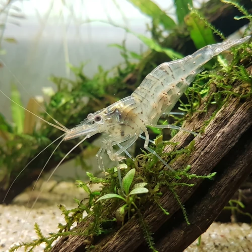

Nome popular principal
Camarão Fantasma
Camarão Fantasma, Camarão Fantasma Brasileiro, Ghost Shrimp
Ficha de peixe
Invertebrados e Crustáceos
Um invertebrado transparente e eficiente limpador de fundo que se adapta perfeitamente a aquários comunitários plantados.

Nome popular principal
Camarão Fantasma, Camarão Fantasma Brasileiro, Ghost Shrimp
Nome científico
Nome técnico essencial para taxonomia, cruzamento de manejo e referência editorial consistente.
Dificuldade de manejo
Use este nível como referência inicial, sempre considerando volume, estabilidade e compatibilidade do aquário.
Seção 1
Seção 2
Seções 4 a 6
Camarão Fantasma tem hábito alimentar onívoro. Excelente. 1 vez ao dia. Alimenta-se de micro-detritos, flocos afundados, rações para peixes de fundo e pequenas algas, desempenhando excelente função na manutenção da limpeza.
Fêmeas adultas são maiores, mais robustas e carregam ovos visíveis sob o abdômen; machos são mais esguios. Tipo de reprodução: Ovíparo. Dificuldade de reprodução: Fácil. Completa todo seu ciclo reprodutivo em água doce. A fêmea carrega os ovos incubados na região abdominal até liberarem filhotes já formados.
Alta. Substrato recomendado: Areia fina de rio ou cascalho rolado de granulometria fina. Necessidade de esconderijos: Alta. Necessita de aquários com plantas densas, musgos e troncos, que servem de abrigo essencial durante o período pós-ecdise (troca da casca).
Seção 7
Extremamente sensível a medicamentos à base de cobre e a picos de amônia ou nitrito, exigindo água limpa e bem estabilizada.
Seção 8
Não, o Macrobrachium jelskii é uma espécie exclusivamente de água doce e completa todo o seu ciclo de vida e reprodução em aquário comum.
Não, é uma espécie pacífica e detritívora que foca no consumo de restos de alimentos, algas e matéria em decomposição.
Sim, o cobre é altamente tóxico para camarões e outros invertebrados, podendo causar mortalidade imediata.